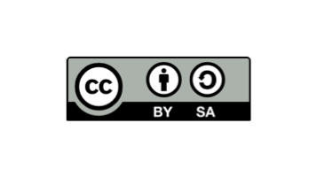

Autoría
Este recurso educativo ha sido diseñado y elaborado por Carmen González Sánchez, profesora de Geografía, Historia e Historia del Arte en Educación Secundaria Obligatoria y Bachillerato.
Esta situación de aprendizaje titulada "El enigma del objeto medieval", dirigida al alumnado de 2º de Educación Secundaria Obligatoria (ESO) propone un reto en el que el alumnado actúa como investigadores históricos, recabando información, trabajando en equipo, resolviendo problemas técnicos y creando un producto final digital (un texto expositivo/museo virtual) aplicando el respeto a la propiedad intelectual.
Este recurso educativo abierto (REA) se comparte bajo una licencia Creative Commons Reconocimiento-CompartirIgual 4.0 Internacional (CC BY-SA 4.0). Esto significa que eres libre de compartir, copiar, distribuir, alterar, transformar y generar una obra derivada a partir de este material, siempre y cuando reconozcas la autoría original y distribuyas tus contribuciones bajo la misma licencia.

Para fomentar la filosofía de los Recursos Educativos Abiertos y facilitar que otros docentes puedan adaptar esta Situación de Aprendizaje a su propio contexto y alumnado, puedes descargar el archivo fuente original de este proyecto: Haz clic aquí para descargar el archivo editable .elp